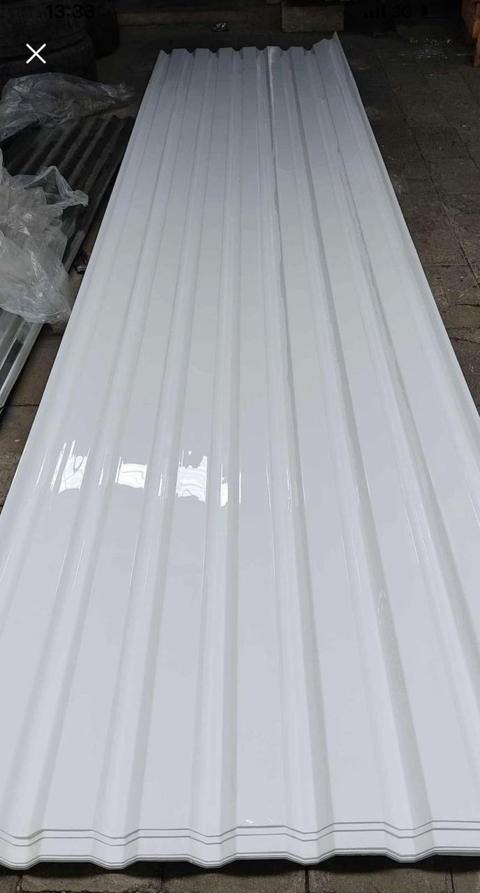
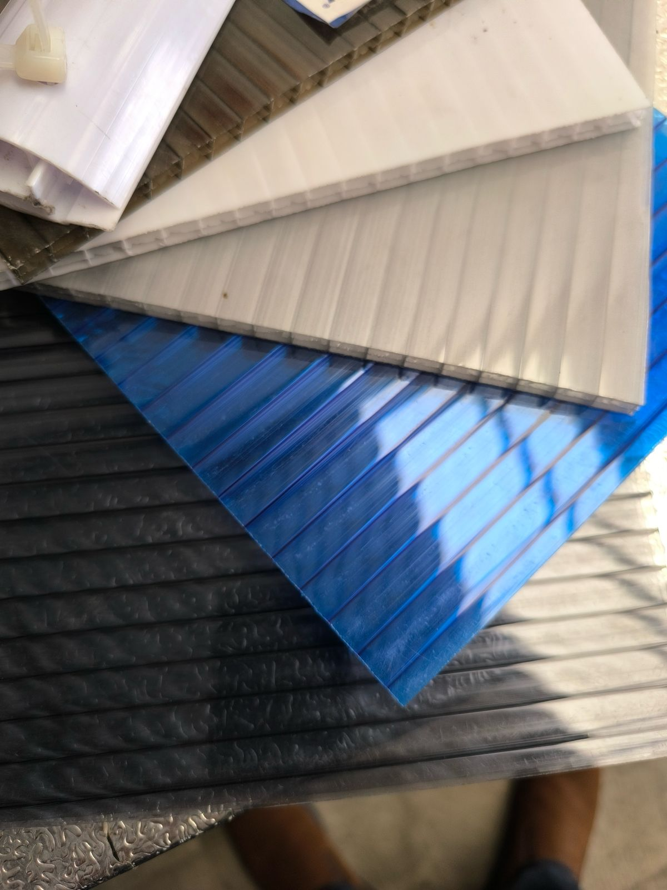
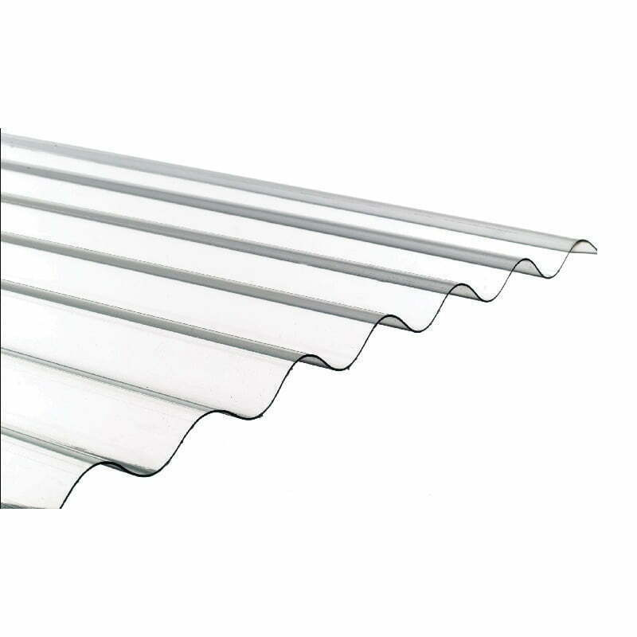

Modelos de láminas

Lámina Troquelada
Diseñada con un perfil de alto rendimiento, esta lámina destaca por su excelente transparencia, gran capacidad de transmisión de luz y una resistencia al impacto superior.
Colores:
- Blanco
- Bronce
- Transparente

Lámina Tipo Galleta
Con un diseño acanalado en forma de “galleta”, esta lámina ofrece mayor rigidez estructural y excelente resistencia al impacto. Permite una mejor distribución de la carga y facilita el escurrimiento del agua, ideal para techos industriales, residenciales y agrícolas.
Colores:
- Blanco
- Bronce
- Transparente
- Azul
- Humo

Lámina Ondulada
Ligera y transparente, con alta resistencia al impacto y al clima. Su forma mejora el drenaje y la rigidez, ideal para techos y cerramientos.
Colores:
- Blanco
- Bronce
- Transparente
- Azul
- Verde
- Skyblue